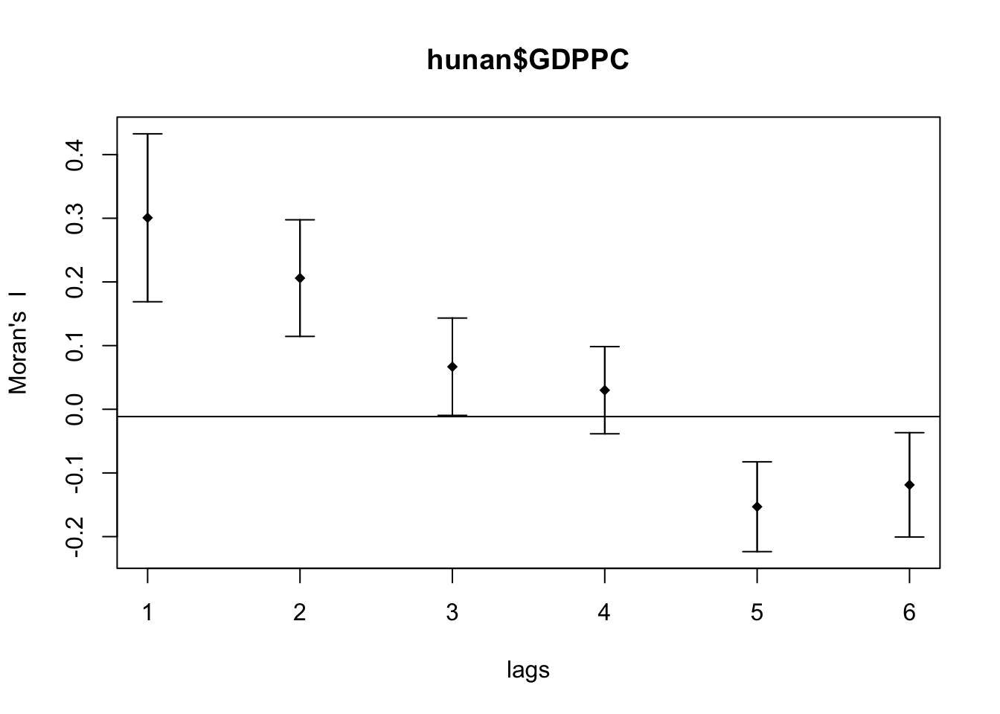

pacman::p_load(sf, spdep, tmap, tidyverse)Handson Excercise 2
Overview
In this webpage, we intend to see if development of a province is evenly distributed. If it is not evenly distributed, we will check for spatial clustering and find out these clusters.
We will use GDP per capital as a measure of country’s development.
Some of the libraries we will be using:
sf is use for importing and handling geospatial data in R,
tidyverse is mainly use for wrangling attribute data in R,
spdep will be used to compute spatial weights, global and local spatial autocorrelation statistics, and
tmap will be used to prepare cartographic quality chropleth map.
Load packages, if unavailable, download
hunan <- st_read(dsn = "data/geospatial",
layer = "Hunan")Reading layer `Hunan' from data source
`/Users/gladwinlam/R Quarto/gladwinlam/ISSS624/Hands-on_Ex02/data/geospatial'
using driver `ESRI Shapefile'
Simple feature collection with 88 features and 7 fields
Geometry type: POLYGON
Dimension: XY
Bounding box: xmin: 108.7831 ymin: 24.6342 xmax: 114.2544 ymax: 30.12812
Geodetic CRS: WGS 84hunan2012 <- read_csv("data/aspatial/Hunan_2012.csv")hunan <- left_join(hunan,hunan2012)1. Visualising
We do so with a comparison between 2 chlropeth maps. One uses
equal <- tm_shape(hunan) +
tm_fill("GDPPC",
n = 5,
style = "equal") +
tm_borders(alpha = 0.5) +
tm_layout(main.title = "Equal interval classification")
quantile <- tm_shape(hunan) +
tm_fill("GDPPC",
n = 5,
style = "quantile") +
tm_borders(alpha = 0.5) +
tm_layout(main.title = "Equal quantile classification")
tmap_arrange(equal,
quantile,
asp=1,
ncol=2)2. Global Spatial Autocorrelation
In here we learn how to compute global spatial autocorrelation statistics and to perform spatial complete randomness test for global spatial autocorrelation.
From here we can determine if spatial arrangement are random or not.
2.1 Computing Contiguity Spatial Weights
We will need to first construct the spatial weight matrix of the study area. We use the queen method to identify the neighbours of each spatial unit. Below code creates a nb object using the poly2nb() function.
wm_q <- poly2nb(hunan,
queen=TRUE)
summary(wm_q)Neighbour list object:
Number of regions: 88
Number of nonzero links: 448
Percentage nonzero weights: 5.785124
Average number of links: 5.090909
Link number distribution:
1 2 3 4 5 6 7 8 9 11
2 2 12 16 24 14 11 4 2 1
2 least connected regions:
30 65 with 1 link
1 most connected region:
85 with 11 links2.2 Row-standardised Weights matrix
After identifying neighbours, we need to allocate weights. We will be allocating equal weights in row standardised form. Each entry will be a fraction of 1/(sum of neighbours of that spatial unit).
rswm_q <- nb2listw(wm_q,
style="W",
zero.policy = TRUE)
rswm_qCharacteristics of weights list object:
Neighbour list object:
Number of regions: 88
Number of nonzero links: 448
Percentage nonzero weights: 5.785124
Average number of links: 5.090909
Weights style: W
Weights constants summary:
n nn S0 S1 S2
W 88 7744 88 37.86334 365.9147For future references, style = “W” refers to equal weights. There are other options:
“W”, “B”, “C”, “U”, “minmax” and “S”
B is the basic binary coding
W is row standardised (sums over all links to n)
C is globally standardised (sums over all links to n)
U is equal to C divided by the number of neighbours (sums over all links to unity)
S is the variance-stabilizing coding scheme proposed by Tiefelsdorf et al. 1999, p. 167-168 (sums over all links to n)
If zero policy is set to TRUE, weights vectors of zero length are inserted for regions without neighbour in the neighbours list.
There are 2 types of Global Spatial Autocorrelation statistics. Moran’s I and Geary’s C. We will compute both.
2.3 Global Spatial Autocorrelation: Moran’s I
We perform statistical testing using Moran’s I.
H0: Spatial randomness - Observed spatial pattern of values is equally likely as any other pattern. Values at one location does not depend and affect another location.
moran.test(hunan$GDPPC,
listw=rswm_q,
zero.policy = TRUE,
na.action=na.omit)
Moran I test under randomisation
data: hunan$GDPPC
weights: rswm_q
Moran I statistic standard deviate = 4.7351, p-value = 1.095e-06
alternative hypothesis: greater
sample estimates:
Moran I statistic Expectation Variance
0.300749970 -0.011494253 0.004348351 If p value < 0.05, we can reject null hypothesis and conclude there is spatial autocorrelation.
Caveat!!
To use Moran’s I, we assume that data is normaly distributed and random. However if it is not or we are unable to verify this assumption, we should use a monte carlo simulation. We conduct numerous rounds of Moran’s I n times to calculate the moran I statistics and take the average to compare with actual value of Moran’s I statistics.
P value returned in the pseudo p-value of the test.
set.seed(1234)
bperm= moran.mc(hunan$GDPPC,
listw=rswm_q,
nsim=999,
zero.policy = TRUE,
na.action=na.omit)
bperm
Monte-Carlo simulation of Moran I
data: hunan$GDPPC
weights: rswm_q
number of simulations + 1: 1000
statistic = 0.30075, observed rank = 1000, p-value = 0.001
alternative hypothesis: greaterIf p value < 0.05, we can reject null hypothesis and conclude there is spatial autocorrelation.
mean(bperm$res[1:999]) #mean moran i simulated[1] -0.01504572var(bperm$res[1:999])[1] 0.004371574summary(bperm$res[1:999]) Min. 1st Qu. Median Mean 3rd Qu. Max.
-0.18339 -0.06168 -0.02125 -0.01505 0.02611 0.27593 hist(bperm$res,
freq=TRUE,
breaks=20,
xlab="Simulated Moran's I")
abline(v=0,
col="red") 
2.4 Global Spatial Autocorrelation: Geary’s C
We try using a different method known as Geary C. Geary C and Moran I are inversely related.
geary.test(hunan$GDPPC, listw=rswm_q)
Geary C test under randomisation
data: hunan$GDPPC
weights: rswm_q
Geary C statistic standard deviate = 3.6108, p-value = 0.0001526
alternative hypothesis: Expectation greater than statistic
sample estimates:
Geary C statistic Expectation Variance
0.6907223 1.0000000 0.0073364 If p value < 0.05, we can reject null hypothesis and conclude there is spatial autocorrelation.
Likewise we can do permutation test for Geary’s C.
set.seed(1234)
bperm=geary.mc(hunan$GDPPC,
listw=rswm_q,
nsim=999)
bperm
Monte-Carlo simulation of Geary C
data: hunan$GDPPC
weights: rswm_q
number of simulations + 1: 1000
statistic = 0.69072, observed rank = 1, p-value = 0.001
alternative hypothesis: greatermean(bperm$res[1:999])[1] 1.004402var(bperm$res[1:999])[1] 0.007436493summary(bperm$res[1:999]) Min. 1st Qu. Median Mean 3rd Qu. Max.
0.7142 0.9502 1.0052 1.0044 1.0595 1.2722 hist(bperm$res, freq=TRUE, breaks=20, xlab="Simulated Geary c")
abline(v=1, col="red") 
2.5 Global Spatial Autocorrelation: Spatial Correlogram
Examine patterns are great to examine patterns of spatial autocorrelation. They show how the correlation changes as the distance between pairs increases.
2.5.1 Spatial Correlogram: Moran’s I correlogram
We can define the number of lags (number of neighbours). In here we set order = 6.
MI_corr <- sp.correlogram(wm_q,
hunan$GDPPC,
order=6,
method="I",
style="W")
plot(MI_corr)
print(MI_corr)Spatial correlogram for hunan$GDPPC
method: Moran's I
estimate expectation variance standard deviate Pr(I) two sided
1 (88) 0.3007500 -0.0114943 0.0043484 4.7351 2.189e-06 ***
2 (88) 0.2060084 -0.0114943 0.0020962 4.7505 2.029e-06 ***
3 (88) 0.0668273 -0.0114943 0.0014602 2.0496 0.040400 *
4 (88) 0.0299470 -0.0114943 0.0011717 1.2107 0.226015
5 (88) -0.1530471 -0.0114943 0.0012440 -4.0134 5.984e-05 ***
6 (88) -0.1187070 -0.0114943 0.0016791 -2.6164 0.008886 **
---
Signif. codes: 0 '***' 0.001 '**' 0.01 '*' 0.05 '.' 0.1 ' ' 1Using 4 lags in the analysis is not significant.
I >0: Clustered, observations similar
i<0: Dispersed, observation dissimilar
2.5.2 Spatial Correlogram: Geary’s C correlogram
We repeat the same but using Geary’s C.
GC_corr <- sp.correlogram(wm_q,
hunan$GDPPC,
order=6,
method="C",
style="W")
plot(GC_corr)
C<1: Clustered, observations similar
C>1: Dispersed, observation dissimilar
If C=1, observations are arranged randomly over space.
print(GC_corr)Spatial correlogram for hunan$GDPPC
method: Geary's C
estimate expectation variance standard deviate Pr(I) two sided
1 (88) 0.6907223 1.0000000 0.0073364 -3.6108 0.0003052 ***
2 (88) 0.7630197 1.0000000 0.0049126 -3.3811 0.0007220 ***
3 (88) 0.9397299 1.0000000 0.0049005 -0.8610 0.3892612
4 (88) 1.0098462 1.0000000 0.0039631 0.1564 0.8757128
5 (88) 1.2008204 1.0000000 0.0035568 3.3673 0.0007592 ***
6 (88) 1.0773386 1.0000000 0.0058042 1.0151 0.3100407
---
Signif. codes: 0 '***' 0.001 '**' 0.01 '*' 0.05 '.' 0.1 ' ' 1Only lag 1,2, 5 are significant.
3. Cluster and Outlier Analysis
Local Indicators of Spatial Association (LISA) measures existence of clusters in spatial arrangement. Cluster means that there are regions with statistics higher or lower than chance alone.
In this section, we apply appropriate LISA using local Moran’s to detect cluster or outlier of GDP per capita 2012 of Hunan Province, PRC.
3.1 Computing Local Moran’s I
We use local moran. We first calculate local moran Ii with given set of weights using, listw, of neighbouring weighting information and zi values
fips <- order(hunan$County)
localMI <- localmoran(hunan$GDPPC, rswm_q)
head(localMI) Ii E.Ii Var.Ii Z.Ii Pr(z != E(Ii))
1 -0.001468468 -2.815006e-05 4.723841e-04 -0.06626904 0.9471636
2 0.025878173 -6.061953e-04 1.016664e-02 0.26266425 0.7928094
3 -0.011987646 -5.366648e-03 1.133362e-01 -0.01966705 0.9843090
4 0.001022468 -2.404783e-07 5.105969e-06 0.45259801 0.6508382
5 0.014814881 -6.829362e-05 1.449949e-03 0.39085814 0.6959021
6 -0.038793829 -3.860263e-04 6.475559e-03 -0.47728835 0.6331568Ii: the local Moran’s I statistics
E.Ii: the expectation of local moran statistic under the randomisation hypothesis
Var.Ii: the variance of local moran statistic under the randomisation hypothesis
Z.Ii:the standard deviate of local moran statistic
Pr(): the p-value of local moran statistic
printCoefmat(data.frame(localMI[fips,], row.names=hunan$County[fips]), check.names=FALSE) Ii E.Ii Var.Ii Z.Ii Pr.z....E.Ii..
Anhua -2.2493e-02 -5.0048e-03 5.8235e-02 -7.2467e-02 0.9422
Anren -3.9932e-01 -7.0111e-03 7.0348e-02 -1.4791e+00 0.1391
Anxiang -1.4685e-03 -2.8150e-05 4.7238e-04 -6.6269e-02 0.9472
Baojing 3.4737e-01 -5.0089e-03 8.3636e-02 1.2185e+00 0.2230
Chaling 2.0559e-02 -9.6812e-04 2.7711e-02 1.2932e-01 0.8971
Changning -2.9868e-05 -9.0010e-09 1.5105e-07 -7.6828e-02 0.9388
Changsha 4.9022e+00 -2.1348e-01 2.3194e+00 3.3590e+00 0.0008
Chengbu 7.3725e-01 -1.0534e-02 2.2132e-01 1.5895e+00 0.1119
Chenxi 1.4544e-01 -2.8156e-03 4.7116e-02 6.8299e-01 0.4946
Cili 7.3176e-02 -1.6747e-03 4.7902e-02 3.4200e-01 0.7324
Dao 2.1420e-01 -2.0824e-03 4.4123e-02 1.0297e+00 0.3032
Dongan 1.5210e-01 -6.3485e-04 1.3471e-02 1.3159e+00 0.1882
Dongkou 5.2918e-01 -6.4461e-03 1.0748e-01 1.6338e+00 0.1023
Fenghuang 1.8013e-01 -6.2832e-03 1.3257e-01 5.1198e-01 0.6087
Guidong -5.9160e-01 -1.3086e-02 3.7003e-01 -9.5104e-01 0.3416
Guiyang 1.8240e-01 -3.6908e-03 3.2610e-02 1.0305e+00 0.3028
Guzhang 2.8466e-01 -8.5054e-03 1.4152e-01 7.7931e-01 0.4358
Hanshou 2.5878e-02 -6.0620e-04 1.0167e-02 2.6266e-01 0.7928
Hengdong 9.9964e-03 -4.9063e-04 6.7742e-03 1.2742e-01 0.8986
Hengnan 2.8064e-02 -3.2160e-04 3.7597e-03 4.6294e-01 0.6434
Hengshan -5.8201e-03 -3.0437e-05 5.1076e-04 -2.5618e-01 0.7978
Hengyang 6.2997e-02 -1.3046e-03 2.1865e-02 4.3486e-01 0.6637
Hongjiang 1.8790e-01 -2.3019e-03 3.1725e-02 1.0678e+00 0.2856
Huarong -1.5389e-02 -1.8667e-03 8.1030e-02 -4.7503e-02 0.9621
Huayuan 8.3772e-02 -8.5569e-04 2.4495e-02 5.4072e-01 0.5887
Huitong 2.5997e-01 -5.2447e-03 1.1077e-01 7.9685e-01 0.4255
Jiahe -1.2431e-01 -3.0550e-03 5.1111e-02 -5.3633e-01 0.5917
Jianghua 2.8651e-01 -3.8280e-03 8.0968e-02 1.0204e+00 0.3076
Jiangyong 2.4337e-01 -2.7082e-03 1.1746e-01 7.1800e-01 0.4728
Jingzhou 1.8270e-01 -8.5106e-04 2.4363e-02 1.1759e+00 0.2396
Jinshi -1.1988e-02 -5.3666e-03 1.1334e-01 -1.9667e-02 0.9843
Jishou -2.8680e-01 -2.6305e-03 4.4028e-02 -1.3543e+00 0.1756
Lanshan 6.3334e-02 -9.6365e-04 2.0441e-02 4.4972e-01 0.6529
Leiyang 1.1581e-02 -1.4948e-04 2.5082e-03 2.3422e-01 0.8148
Lengshuijiang -1.7903e+00 -8.2129e-02 2.1598e+00 -1.1623e+00 0.2451
Li 1.0225e-03 -2.4048e-07 5.1060e-06 4.5260e-01 0.6508
Lianyuan -1.4672e-01 -1.8983e-03 1.9145e-02 -1.0467e+00 0.2952
Liling 1.3774e+00 -1.5097e-02 4.2601e-01 2.1335e+00 0.0329
Linli 1.4815e-02 -6.8294e-05 1.4499e-03 3.9086e-01 0.6959
Linwu -2.4621e-03 -9.0703e-06 1.9258e-04 -1.7676e-01 0.8597
Linxiang 6.5904e-02 -2.9028e-03 2.5470e-01 1.3634e-01 0.8916
Liuyang 3.3688e+00 -7.7502e-02 1.5180e+00 2.7972e+00 0.0052
Longhui 8.0801e-01 -1.1377e-02 1.5538e-01 2.0787e+00 0.0376
Longshan 7.5663e-01 -1.1100e-02 3.1449e-01 1.3690e+00 0.1710
Luxi 1.8177e-01 -2.4855e-03 3.4249e-02 9.9561e-01 0.3194
Mayang 2.1852e-01 -5.8773e-03 9.8049e-02 7.1663e-01 0.4736
Miluo 1.8704e+00 -1.6927e-02 2.7925e-01 3.5715e+00 0.0004
Nan -9.5789e-03 -4.9497e-04 6.8341e-03 -1.0988e-01 0.9125
Ningxiang 1.5607e+00 -7.3878e-02 8.0012e-01 1.8274e+00 0.0676
Ningyuan 2.0910e-01 -7.0884e-03 8.2306e-02 7.5356e-01 0.4511
Pingjiang -9.8964e-01 -2.6457e-03 5.6027e-02 -4.1698e+00 0.0000
Qidong 1.1806e-01 -2.1207e-03 2.4747e-02 7.6396e-01 0.4449
Qiyang 6.1966e-02 -7.3374e-04 8.5743e-03 6.7712e-01 0.4983
Rucheng -3.6992e-01 -8.8999e-03 2.5272e-01 -7.1814e-01 0.4727
Sangzhi 2.5053e-01 -4.9470e-03 6.8000e-02 9.7972e-01 0.3272
Shaodong -3.2659e-02 -3.6592e-05 5.0546e-04 -1.4510e+00 0.1468
Shaoshan 2.1223e+00 -5.0227e-02 1.3668e+00 1.8583e+00 0.0631
Shaoyang 5.9499e-01 -1.1253e-02 1.3012e-01 1.6807e+00 0.0928
Shimen -3.8794e-02 -3.8603e-04 6.4756e-03 -4.7729e-01 0.6332
Shuangfeng 9.2835e-03 -2.2867e-03 3.1516e-02 6.5174e-02 0.9480
Shuangpai 8.0591e-02 -3.1366e-04 8.9838e-03 8.5358e-01 0.3933
Suining 3.7585e-01 -3.5933e-03 4.1870e-02 1.8544e+00 0.0637
Taojiang -2.5394e-01 -1.2395e-03 1.4477e-02 -2.1002e+00 0.0357
Taoyuan 1.4729e-02 -1.2039e-04 8.5103e-04 5.0903e-01 0.6107
Tongdao 4.6482e-01 -6.9870e-03 1.9879e-01 1.0582e+00 0.2900
Wangcheng 4.4220e+00 -1.1067e-01 1.3596e+00 3.8873e+00 0.0001
Wugang 7.1003e-01 -7.8144e-03 1.0710e-01 2.1935e+00 0.0283
Xiangtan 2.4530e-01 -3.6457e-04 3.2319e-03 4.3213e+00 0.0000
Xiangxiang 2.6271e-01 -1.2703e-03 2.1290e-02 1.8092e+00 0.0704
Xiangyin 5.4525e-01 -4.7442e-03 7.9236e-02 1.9539e+00 0.0507
Xinhua 1.1810e-01 -6.2649e-03 8.6001e-02 4.2409e-01 0.6715
Xinhuang 1.5725e-01 -4.1820e-03 3.6648e-01 2.6667e-01 0.7897
Xinning 6.8928e-01 -9.6674e-03 2.0328e-01 1.5502e+00 0.1211
Xinshao 5.7578e-02 -8.5932e-03 1.1769e-01 1.9289e-01 0.8470
Xintian -7.4050e-03 -5.1493e-03 1.0877e-01 -6.8395e-03 0.9945
Xupu 3.2406e-01 -5.7468e-03 5.7735e-02 1.3726e+00 0.1699
Yanling -6.9021e-02 -5.9211e-04 9.9306e-03 -6.8667e-01 0.4923
Yizhang -2.6844e-01 -2.2463e-03 4.7588e-02 -1.2202e+00 0.2224
Yongshun 6.3064e-01 -1.1350e-02 1.8830e-01 1.4795e+00 0.1390
Yongxing 4.3411e-01 -9.0735e-03 1.5088e-01 1.1409e+00 0.2539
You 7.8750e-02 -7.2728e-03 1.2116e-01 2.4714e-01 0.8048
Yuanjiang 2.0004e-04 -1.7760e-04 2.9798e-03 6.9181e-03 0.9945
Yuanling 8.7298e-03 -2.2981e-06 2.3221e-05 1.8121e+00 0.0700
Yueyang 4.1189e-02 -1.9768e-04 2.3113e-03 8.6085e-01 0.3893
Zhijiang 1.0476e-01 -7.8123e-04 1.3100e-02 9.2214e-01 0.3565
Zhongfang -2.2685e-01 -2.1455e-03 3.5927e-02 -1.1855e+00 0.2358
Zhuzhou 3.2864e-01 -5.2432e-04 7.2391e-03 3.8688e+00 0.0001
Zixing -7.6849e-01 -8.8210e-02 9.4057e-01 -7.0144e-01 0.4830Next we plot the value of local moran i (Ii) into choropleth mapping. We append the above data into a spatial polygon dataframe
hunan.localMI <- cbind(hunan,localMI) %>%
rename(Pr.Ii = Pr.z....E.Ii..)tm_shape(hunan.localMI) +
tm_fill(col = "Ii",
style = "pretty",
palette = "RdBu",
title = "local moran statistics") +
tm_borders(alpha = 0.5)The above is plotting based on Ii values.
If we want to plot by p values, we can use below code and even customise cutoff.
tm_shape(hunan.localMI) +
tm_fill(col = "Pr.Ii",
breaks=c(-Inf, 0.001, 0.01, 0.05, 0.1, Inf), #define category
palette="-Blues",
title = "local Moran's I p-values") +
tm_borders(alpha = 0.5)If want to plot them side by side, we do so again using tmap_arrange()
localMI.map <- tm_shape(hunan.localMI) +
tm_fill(col = "Ii",
style = "pretty",
title = "local moran statistics") +
tm_borders(alpha = 0.5)
pvalue.map <- tm_shape(hunan.localMI) +
tm_fill(col = "Pr.Ii",
breaks=c(-Inf, 0.001, 0.01, 0.05, 0.1, Inf),
palette="-Blues",
title = "local Moran's I p-values") +
tm_borders(alpha = 0.5)
tmap_arrange(localMI.map, pvalue.map, asp=1, ncol=2)3.2 Creating LISA Cluster Map
For significant spatial areas on the map, we color code it according to its spatial autocorrelation.
The first step is to plot the Moran scatter plot. The scatter plot shows the relationship between a chosen attribute and its spatially lagged values at neighbouring location. It helps us identify locations of clusters and outliers.
nci <- moran.plot(hunan$GDPPC, rswm_q,
labels=as.character(hunan$County),
xlab="GDPPC 2012",
ylab="Spatially Lag GDPPC 2012")
How do we interpret the above?
The Moran coefficient is equivalent to the slope of regression line on Moran plot. For each axis, the dotted lines represent the average of that attribute.
The x axis represents the value of GDPPC. The Y axis is spatial lag of GDPPC. Spatial lag is a variable that averages the neighbouring values of a location.
There are also 4 quadrants created by the dotted lines. Each quadrant can help to identify clusters and outliers.
Clusters
Top right hand quadrant represents the HH cluster and bottom left represents the LL cluster. A cluster means the centre spatial unit is positively autocorrelated with its neighbours.
HH cluster means centre spatial unit value is high and neighbouring values are also high
LL cluster means centre spatial unit value is low and neighbouring values are also low
Outliers
Top left hand quadrant represents the LH outlier and bottom right represents the HL outlier. Outlier means the centre spatial unit is negatively autocorrelated with its neighbours.
LH outlier means centre spatial unit value is low but neighbouring values are high
HL cluster means centre spatial unit value is high but neighbouring values are low
In common practice, we standardise the axis as they might be in different ranges. We subtract values from the mean and divide by its standard deviation. We use scale() function and pipe it to become a vector data type.
hunan$Z.GDPPC <- scale(hunan$GDPPC) %>%
as.vector Standardised Moran Scatterplot
nci2 <- moran.plot(hunan$Z.GDPPC, rswm_q,
labels=as.character(hunan$County),
xlab="z-GDPPC 2012",
ylab="Spatially Lag z-GDPPC 2012")
Now, we start preparing a LISA cluster map.
#initialise vector
quadrant <- vector(mode="numeric",length=nrow(localMI))
quadrant [1] 0 0 0 0 0 0 0 0 0 0 0 0 0 0 0 0 0 0 0 0 0 0 0 0 0 0 0 0 0 0 0 0 0 0 0 0 0 0
[39] 0 0 0 0 0 0 0 0 0 0 0 0 0 0 0 0 0 0 0 0 0 0 0 0 0 0 0 0 0 0 0 0 0 0 0 0 0 0
[77] 0 0 0 0 0 0 0 0 0 0 0 0#Divding high and low regions of attribute
DV <- hunan$GDPPC - mean(hunan$GDPPC)
DV [1] -737.80682 -3423.80682 10187.19318 68.19318 1149.19318
[6] 2732.19318 38713.19318 37797.19318 46261.19318 -11643.80682
[11] -15907.80682 7686.19318 -418.80682 -13118.80682 -6590.80682
[16] 13246.19318 41301.19318 13.19318 3080.19318 -2493.80682
[21] 767.19318 1700.19318 -6403.80682 -7378.80682 6441.19318
[26] -10070.80682 -4056.80682 -10660.80682 -11623.80682 -8992.80682
[31] -10541.80682 -210.80682 -3886.80682 39852.19318 -6649.80682
[36] -11006.80682 -14272.80682 -3503.80682 -11164.80682 -14832.80682
[41] 841.19318 -8335.80682 -12292.80682 -13672.80682 -12890.80682
[46] 31165.19318 4956.19318 -9841.80682 -11022.80682 -12824.80682
[51] -4067.80682 7132.19318 -14650.80682 -6932.80682 -14814.80682
[56] -9837.80682 -3093.80682 1853.19318 -8603.80682 -4316.80682
[61] -11707.80682 -2462.80682 -9978.80682 6008.19318 7492.19318
[66] 18092.19318 -7152.80682 9578.19318 -5690.80682 -4326.80682
[71] 17086.19318 -3383.80682 11859.19318 3184.19318 -9780.80682
[76] 1955.19318 -3766.80682 -4895.80682 -14751.80682 -6058.80682
[81] -6671.80682 -5022.80682 8448.19318 64251.19318 -1525.80682
[86] 2655.19318 -6345.80682 -7236.80682#Divding high and low regions of spatially lagged attribute
C_mI <- localMI[,1] - mean(localMI[,1])
C_mI 1 2 3 4 5 6
-0.30221844 -0.27487180 -0.31273762 -0.29972750 -0.28593509 -0.33954380
7 8 9 10 11 12
3.06807170 1.25993963 4.12120865 -0.70007255 -0.89235134 -0.42505828
13 14 15 16 17 18
-0.30321204 -0.67066658 -0.56918654 0.13335802 -1.06923631 -0.30077984
19 20 21 22 23 24
-0.29075358 -0.27268559 -0.30657005 -0.28916925 -0.18268991 -0.15531348
25 26 27 28 29 30
-0.52759582 -0.04077981 -0.11805029 -0.08223170 0.16407439 -0.14349603
31 32 33 34 35 36
0.02331158 -0.29202012 -0.19598741 -2.09108455 -0.29146643 -0.18264771
37 38 39 40 41 42
0.43649874 -0.14865072 0.22842506 0.50725511 -0.33340888 0.07509883
43 44 45 46 47 48
0.40928176 0.38852855 -0.24317176 1.82151593 -0.03804219 0.04662022
49 50 51 52 53 54
-0.12061915 -0.01608851 -0.21697786 -0.58754861 0.45588117 -0.11898293
55 56 57 58 59 60
0.32989274 -0.32324261 -0.31032890 -0.30054993 -0.01423870 -0.23741635
61 62 63 64 65 66
-0.09164795 -0.22015916 -0.30815499 -0.31613873 -0.23484594 1.56962191
67 68 69 70 71 72
-1.29038827 0.24450175 -0.22757363 -0.28019095 1.07667831 -0.36977086
73 74 75 76 77 78
-0.22199956 0.02789154 -0.05021676 -0.25956120 -0.23878379 -0.55468683
79 80 81 82 83 84
0.29424501 -0.44747359 -0.11285390 -0.23775259 -0.11834556 4.60145154
85 86 87 88
-0.28602057 -0.05544925 -0.08654777 -0.05738377 signif <- 0.05Defining the high-high, low-low, low-high and high-low categories.
quadrant[DV >0 & C_mI>0] <- 4 ##HH
quadrant[DV <0 & C_mI<0] <- 1 ##LL
quadrant[DV <0 & C_mI>0] <- 2 ##LH
quadrant[DV >0 & C_mI<0] <- 3 ##HL
quadrant[localMI[,5]>signif] <- 0 # non significant local MI areas bin into class 1hunan.localMI$quadrant <- quadrant
colors <- c("#ffffff", "#2c7bb6", "#abd9e9", "#fdae61", "#d7191c")
clusters <- c("insignificant", "low-low", "low-high", "high-low", "high-high")
tm_shape(hunan.localMI) +
tm_fill(col = "quadrant",
style = "cat",
palette = colors[c(sort(unique(quadrant)))+1],
labels = clusters[c(sort(unique(quadrant)))+1],
popup.vars = c("")) +
tm_view(set.zoom.limits = c(11,17)) +
tm_borders(alpha=0.5)gdppc <- qtm(hunan, "GDPPC")
hunan.localMI$quadrant <- quadrant
colors <- c("#ffffff", "#2c7bb6", "#abd9e9", "#fdae61", "#d7191c")
clusters <- c("insignificant", "low-low", "low-high", "high-low", "high-high")
LISAmap <- tm_shape(hunan.localMI) +
tm_fill(col = "quadrant",
style = "cat",
palette = colors[c(sort(unique(quadrant)))+1],
labels = clusters[c(sort(unique(quadrant)))+1],
popup.vars = c("")) +
tm_view(set.zoom.limits = c(11,17)) +
tm_borders(alpha=0.5)
tmap_arrange(gdppc, LISAmap, asp=1, ncol=2)4. Hot Sport and Cold Spot Analysis
Apart from cluster and outlier detection, we can use LISA to determin hotspot and coldspot.
Hotspot: high values cluster
Coldspot: low values cluster
An alternative is using Getis and Ord’s G-statistics. It looks at neighbours within a defined proximity to identify where either high or low values clutser spatially. Here, statistically significant hot-spots are recognised as areas of high values where other areas within a neighbourhood range also share high values too.
Steps in using Getis and Ord’s G-statistics to identify hotspots or coldspots:
Deriving spatial weight matrix
Computing Gi statistics
Mapping Gi statistics
4.1 Computing Distance Based Matrix
For Getis-Ord method, neighbours are defined based on distance instead of contiguity. Distance can be defined with either:
Fixed distance weight matrix
Adaptive distance weight matrix
Fixed Distance Weight Matrix
We define a fixed distance proximity. Neighbours who are within the proximity are considered neighbours. However in scenarios where the polygon of reference is huge, little or no neighbours might be found as the distance between its cetriod to its border and defined distance proximity might be similar. In this scenario we can use adaptive distance weight matrix.
Adaptive distance weight matrix
The distance is adaptive in the sense we define the proximity based on number of neighbours in interest.
First we derive the centroids.
longitude <- map_dbl(hunan$geometry, ~st_centroid(.x)[[1]])
latitude <- map_dbl(hunan$geometry, ~st_centroid(.x)[[2]])
coords <- cbind(longitude, latitude) #long lat formatNext, we define the cut off distance.
#coords <- coordinates(hunan)
k1 <- knn2nb(knearneigh(coords))
k1dists <- unlist(nbdists(k1, coords, longlat = TRUE)) #cal centroid to neighbour distance
summary(k1dists) # find out min and max of 1 neighbour Min. 1st Qu. Median Mean 3rd Qu. Max.
24.79 32.57 38.01 39.07 44.52 61.79 We can see furthest distance of 1 polygon centroid to neighbour border is 61.79 km max. We will use this as upperbound as it ensures more than 1 neighbour is found.
4.1.1 Fixed Distance Weight Matrix
We can compute distance weight matrix using dnearneigh(). Next we convert the nb object into spatial weights object.
wm_d62 <- dnearneigh(coords, 0, 62, longlat = TRUE)
wm_d62Neighbour list object:
Number of regions: 88
Number of nonzero links: 324
Percentage nonzero weights: 4.183884
Average number of links: 3.681818 wm62_lw <- nb2listw(wm_d62, style = 'B')
summary(wm62_lw)Characteristics of weights list object:
Neighbour list object:
Number of regions: 88
Number of nonzero links: 324
Percentage nonzero weights: 4.183884
Average number of links: 3.681818
Link number distribution:
1 2 3 4 5 6
6 15 14 26 20 7
6 least connected regions:
6 15 30 32 56 65 with 1 link
7 most connected regions:
21 28 35 45 50 52 82 with 6 links
Weights style: B
Weights constants summary:
n nn S0 S1 S2
B 88 7744 324 648 54404.1.2 Adaptive Distance Weight Matrix
We use K nearest neighbours.
knn <- knn2nb(knearneigh(coords, k=8))
knnNeighbour list object:
Number of regions: 88
Number of nonzero links: 704
Percentage nonzero weights: 9.090909
Average number of links: 8
Non-symmetric neighbours listknn_lw <- nb2listw(knn, style = 'B')
summary(knn_lw)Characteristics of weights list object:
Neighbour list object:
Number of regions: 88
Number of nonzero links: 704
Percentage nonzero weights: 9.090909
Average number of links: 8
Non-symmetric neighbours list
Link number distribution:
8
88
88 least connected regions:
1 2 3 4 5 6 7 8 9 10 11 12 13 14 15 16 17 18 19 20 21 22 23 24 25 26 27 28 29 30 31 32 33 34 35 36 37 38 39 40 41 42 43 44 45 46 47 48 49 50 51 52 53 54 55 56 57 58 59 60 61 62 63 64 65 66 67 68 69 70 71 72 73 74 75 76 77 78 79 80 81 82 83 84 85 86 87 88 with 8 links
88 most connected regions:
1 2 3 4 5 6 7 8 9 10 11 12 13 14 15 16 17 18 19 20 21 22 23 24 25 26 27 28 29 30 31 32 33 34 35 36 37 38 39 40 41 42 43 44 45 46 47 48 49 50 51 52 53 54 55 56 57 58 59 60 61 62 63 64 65 66 67 68 69 70 71 72 73 74 75 76 77 78 79 80 81 82 83 84 85 86 87 88 with 8 links
Weights style: B
Weights constants summary:
n nn S0 S1 S2
B 88 7744 704 1300 230144.2 Compute Gi Statistics
4.2.1 Gi Statistics with Fixed Distance Weight Matrix
fips <- order(hunan$County)
gi.fixed <- localG(hunan$GDPPC, wm62_lw)
gi.fixed [1] 0.436075843 -0.265505650 -0.073033665 0.413017033 0.273070579
[6] -0.377510776 2.863898821 2.794350420 5.216125401 0.228236603
[11] 0.951035346 -0.536334231 0.176761556 1.195564020 -0.033020610
[16] 1.378081093 -0.585756761 -0.419680565 0.258805141 0.012056111
[21] -0.145716531 -0.027158687 -0.318615290 -0.748946051 -0.961700582
[26] -0.796851342 -1.033949773 -0.460979158 -0.885240161 -0.266671512
[31] -0.886168613 -0.855476971 -0.922143185 -1.162328599 0.735582222
[36] -0.003358489 -0.967459309 -1.259299080 -1.452256513 -1.540671121
[41] -1.395011407 -1.681505286 -1.314110709 -0.767944457 -0.192889342
[46] 2.720804542 1.809191360 -1.218469473 -0.511984469 -0.834546363
[51] -0.908179070 -1.541081516 -1.192199867 -1.075080164 -1.631075961
[56] -0.743472246 0.418842387 0.832943753 -0.710289083 -0.449718820
[61] -0.493238743 -1.083386776 0.042979051 0.008596093 0.136337469
[66] 2.203411744 2.690329952 4.453703219 -0.340842743 -0.129318589
[71] 0.737806634 -1.246912658 0.666667559 1.088613505 -0.985792573
[76] 1.233609606 -0.487196415 1.626174042 -1.060416797 0.425361422
[81] -0.837897118 -0.314565243 0.371456331 4.424392623 -0.109566928
[86] 1.364597995 -1.029658605 -0.718000620
attr(,"cluster")
[1] Low Low High High High High High High High Low Low High Low Low Low
[16] High High High High Low High High Low Low High Low Low Low Low Low
[31] Low Low Low High Low Low Low Low Low Low High Low Low Low Low
[46] High High Low Low Low Low High Low Low Low Low Low High Low Low
[61] Low Low Low High High High Low High Low Low High Low High High Low
[76] High Low Low Low Low Low Low High High Low High Low Low
Levels: Low High
attr(,"gstari")
[1] FALSE
attr(,"call")
localG(x = hunan$GDPPC, listw = wm62_lw)
attr(,"class")
[1] "localG"The Gi statistics is represented as a Z-score. Greater values represent a greater intensity of clustering and the direction (positive or negative) indicates high or low clusters.
Next, we will join the Gi values to their corresponding hunan sf data frame and renaming field name of gi values to gstat_fixed by using the code chunk below.
hunan.gi <- cbind(hunan, as.matrix(gi.fixed)) %>%
rename(gstat_fixed = as.matrix.gi.fixed.)4.2.2 Mapping Gi Statistics with Fixed Distance Weight Matrix
gdppc <- qtm(hunan, "GDPPC")
Gimap <-tm_shape(hunan.gi) +
tm_fill(col = "gstat_fixed",
style = "pretty",
palette="-RdBu",
title = "local Gi") +
tm_borders(alpha = 0.5)
tmap_arrange(gdppc, Gimap, asp=1, ncol=2)4.2.3 Gi Statistics with Adaptive Distance Weight Matrix
fips <- order(hunan$County)
gi.adaptive <- localG(hunan$GDPPC, knn_lw)
hunan.gi <- cbind(hunan, as.matrix(gi.adaptive)) %>%
rename(gstat_adaptive = as.matrix.gi.adaptive.)4.242 Mapping Gi Statistics with Adaptive Distance Weight Matrix
gdppc<- qtm(hunan, "GDPPC")
Gimap <- tm_shape(hunan.gi) +
tm_fill(col = "gstat_adaptive",
style = "pretty",
palette="-RdBu",
title = "local Gi") +
tm_borders(alpha = 0.5)
tmap_arrange(gdppc,
Gimap,
asp=1,
ncol=2)